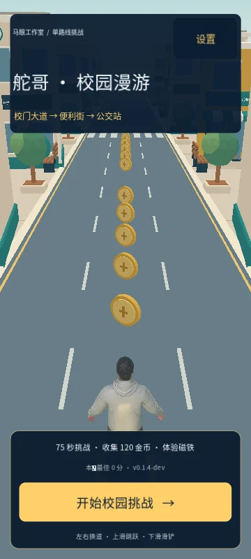
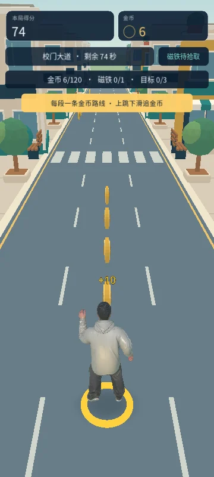
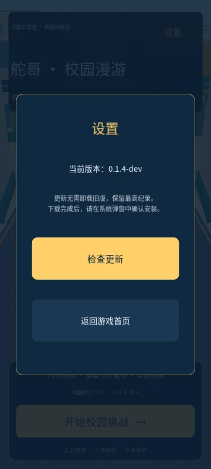

CAMPUS RUN / ANDROID
城市那么大，
这一跑，听你的。
舵哥快跑↗
校园新场景，单路线追币。
75秒挑战，换道、跳跃与滑铲。
Android 10 及以上 · 64 位 ARM 设备
线路 1 为国内加速节点（实测约 4 MB/s），线路 2/3 为 GitHub 原站，作为备份。支持断点续传。
当前为安卓测试版，欢迎上手试跑。
READY TO RUN.
01 / 校园挑战75 秒挑战 ↗
三轨闪避✦跳跃 · 滑铲✦金币收集✦挑战最高分✦随时开跑
01 / FIRST LOOK
跑进校园街区。
从第一步，到下一次破纪录。
以下为 0.1.4 校园玩法画面，安装包版本以下方信息为准。



- 01
下载安装包
点击“下载 Android 新版”。如果在微信或 QQ 内无法下载，请选择“在浏览器中打开”。
- 02
安装到手机
打开下载的 APK。若系统询问，可仅为当前浏览器允许“安装未知应用”，安装后再关闭该权限。
- 03
点开“舵哥快跑（新版）”
左右滑动换道，上滑跳跃，下滑滑铲。前方的路，交给你了。
03 / RELEASE NOTES
现在，先跑起来。
当前下载为 0.1.10-dev：性能专项——移动端关闭辉光、下调 3D 渲染分辨率并降低阴影开销，解决实机「全程不流畅」；赛道障碍物与金币改为复用，消除每隔一两秒重建造成的周期性卡顿；安装包从 55.2 MiB 瘦到 55.2 MiB。签名证书与 0.1.8 相同，0.1.8 / 0.1.8.1 可直接覆盖更新；已安装 0.1.6 / 0.1.7 的用户仍需先卸载再安装，本地纪录不保留。实际体验以设备为准。
- 当前版本
- 0.1.10-dev · 独立测试版
- 更新日期
- 2026.11.01
- 安装包
- 55.2 MiB · ARM64 · Android 10+
- SHA-256 文件校验
d771dc68fb09d6bba554d36ca7158916a469d944dafa816aa0106fcc0cd1e321
先体验再更新：查看已验收的在线试玩 →。游戏内更新：右上角“设置” → “检查更新”。
旧版下载
旧版继续保留。
已安装旧版的朋友可以继续使用。0.1.4 与独立新版是两个应用，纪录分别保存；无需为了安装新版卸载旧版。
下载旧版 0.1.4 · 48.9 MiB →下一次最好成绩，
从这一次开始。